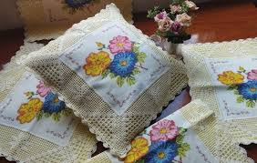

O bordado é uma técnica artesanal de decorar tecidos usando agulhas e fios (algodão, seda, lã), criando desenhos manuais ou à máquina, como ponto cruz e livre. Com raízes antigas, destaca-se pela personalização de moda, decoração, valor cultural e benefícios terapêuticos. Essencialmente, precisa de tecido, linha e criatividade.
Você sabe o que é um bordado? Para começar, vamos definir que bordado é a arte de ornamentar diferentes tecidos, com figuras, desenhos ou tipografias. Eles podem ser criados à mão ou através de máquinas que com agulhas, fios de algodão, seda, lã, linho e vários outros materiais, criam estes desenhos impressionantes.
Quais são os tipos de bordados que existem?
O bordado é uma técnica de decoração de tecidos que consiste em criar desenhos ou padrões usando agulhas e linhas. Essa prática pode ser feita à mão ou à máquina e permite a aplicação de diversos tipos de pontos, como o ponto cruz, ponto cheio, ponto reto, entre outros.
Os primeiros exemplos conhecidos de bordado foram descobertos na China e datam de cerca de 3500 a.C. Esses antigos bordados eram frequentemente usados para adornar roupas e tecidos funerários, refletindo a importância do bordado nas culturas antigas.
Materiais para bordado de letras
O registro de um dos maiores e mais antigos bordados de que sabemos é o do Bordado de Bayeux. Com 70 metros de comprimento, essa peça foi feita por diversas pessoas, bordadeiras, que habitaram a região da Normandia, na França, entre os anos 1.070 e 1.166.
Tecido: O bordado livre pode ser feito em praticamente qualquer tecido, mas tecidos de algodão ou linho são os mais recomendados para iniciantes, pois são fáceis de manusear. Linha: Você pode usar linha de bordar mouliné, linha perlé, ou até mesmo fios de lã para criar diferentes texturas e efeitos.